Bhakkar, Punjab — checked against Sentinel-2 NDVI
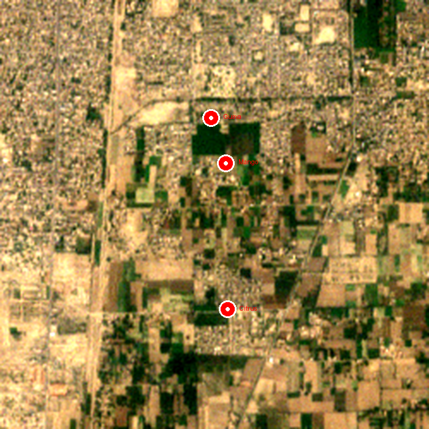
Bhakkar, 7 Nov 2026 points. Sentinel-2, 3 Nov 2026. Red pins are the exact GPS points where the photos were taken.
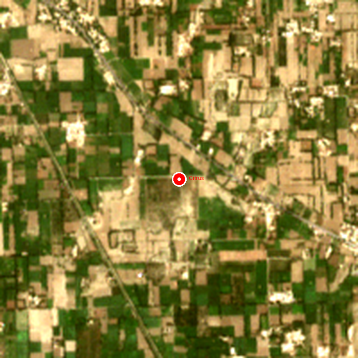
Bhakkar, 30 Sep 2026 point. Sentinel-2, 29 Sep 2026. The Citrus pin is the exact GPS point of the photo.
| # | Crop | What I saw | NDVI | Expected | Match? |
|---|---|---|---|---|---|
| 1 | Citrus | Healthy trees, edge of orchard | 0.24 | Mixed | Yes |
| 2 | Mango | Young sparse trees, bare soil | 0.12 | Low | Yes |
| 3 | Guava | Young trees, wide bare soil | 0.20 | Low | Yes |
| 4 | Citrus | Thin hedge, bare ground beside it | 0.13 | Low | Yes |
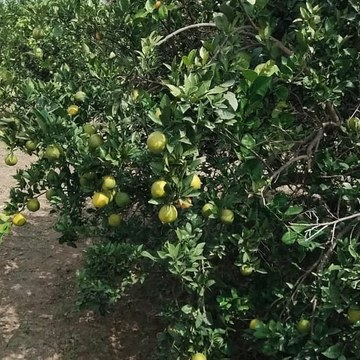
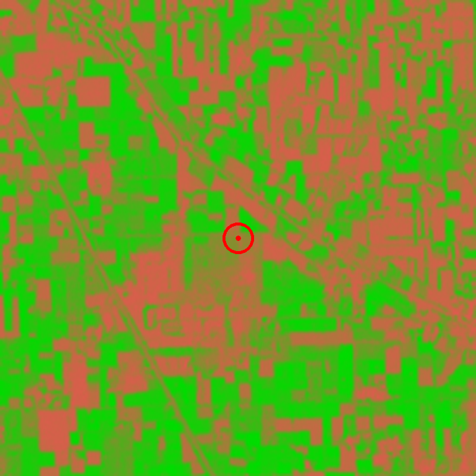
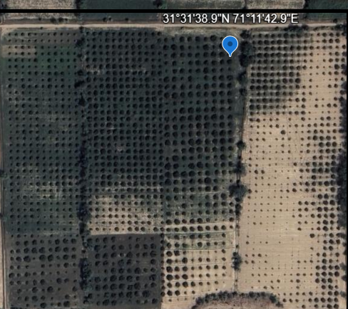
Satellite NDVI at the point: 0.36. The orchard canopy itself reads about 0.53 and bare soil about 0.15. The sensor is right — the photo was taken on the orchard edge, so the number mixes trees and bare field, and the Google view above shows that edge clearly.
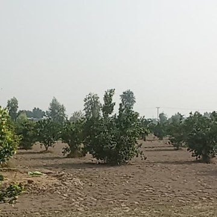
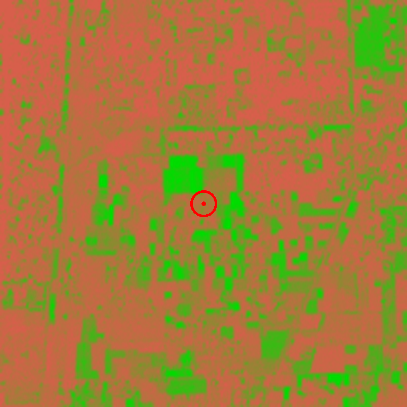
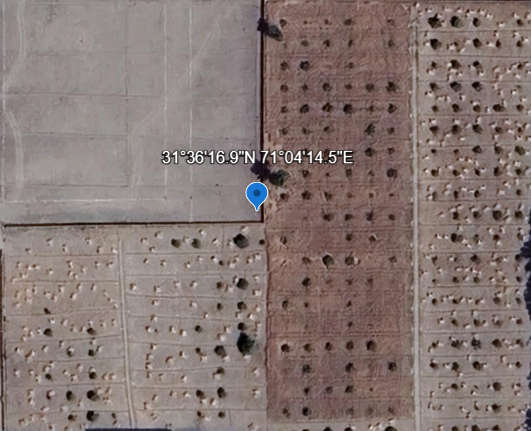
Satellite NDVI at the point: 0.18. Low, as expected — the ground here is mostly bare dirt with a few young trees, and the satellite reads it low, correctly.
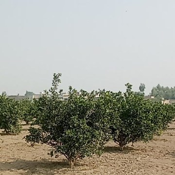
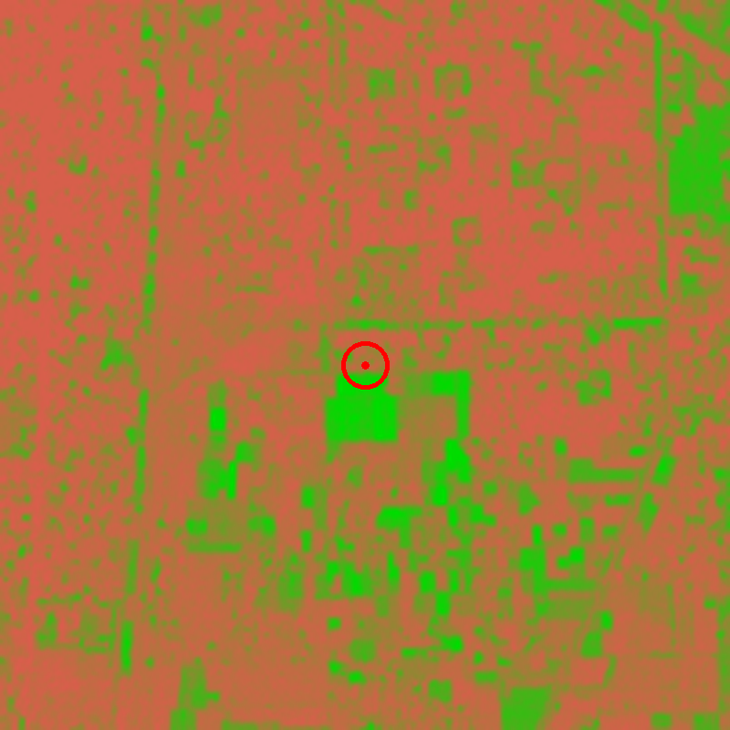
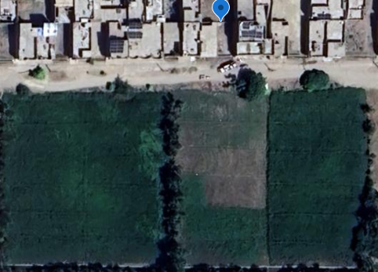
Satellite NDVI at the point: 0.30. Low, as expected — sparse young trees on bare soil read low, and the satellite reads it that way.
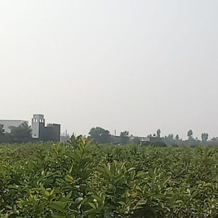
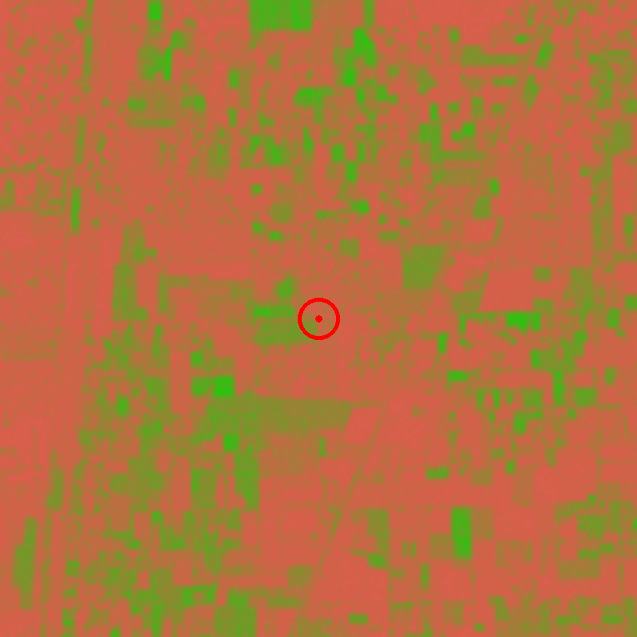
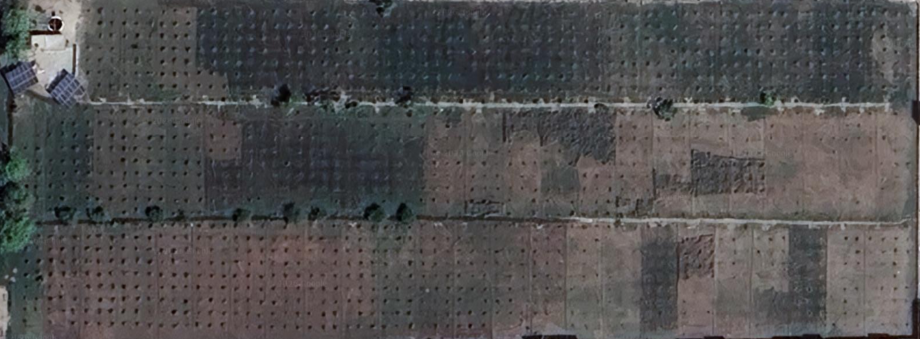
Satellite NDVI at the point: 0.21. Low, as expected — the photo shows a dense hedge, but from above it is a thin tree line in a big bare area, and the pin sits on the bare ground beside it.
What this proves so far: in every check, the satellite reads what is actually on the ground — dense orchard reads high, bare soil reads low. That is the whole point of validation.
Still to come: one dense orchard photo standing inside the trees (mango or citrus), and a field crop (tomato, potato or spinach) — then 5 points across 5 crops, and the claim is field-validated.
Imagery: Contains modified Copernicus Sentinel data 2026.